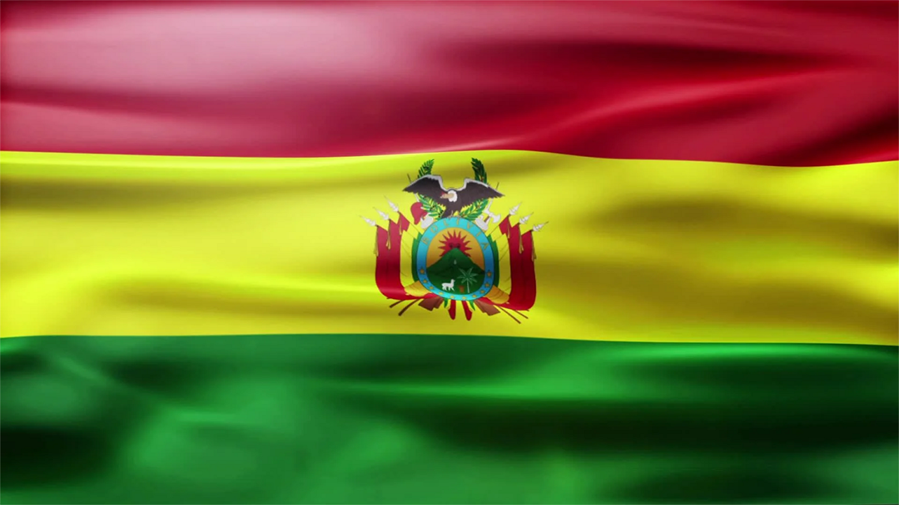

A Bolívia foi palco de grandes civilizações, a mais importante das quais foi a Civilização Tiahuanaco. Tornou-se parte do Império Inca no século XV. Quando os espanhóis chegaram no século XVI, a Bolívia, rica em depósitos de prata, foi incorporada no vice-reino do Peru, e mais tarde no de Rio Da Prata.
O esporte mais praticado da Bolívia é o futebol.
A comida boliviana é capaz de levar qualquer um por uma viagem entre sabores e aromas tradicionais, que remontam a civilizações pré-colombianas e contam muito sobre o estilo de vida andino.Com ingredientes ricos em tempero e textura. Em geral, as comidas têm um toque caseiro e podem variar bastante a depender da região do país em que você está.
Na Bolívia, são falados o espanhol, quechua, aimara, guaraní e uma variedade de línguas indígenas de menor uso. Durante o Censo de 2001, 47% da população declarou falar alguma língua indígena, enquanto 36% a tinha como língua materna.
Apesar de ser uma país pequeno em uma zona tropical, o clima na Bolívia pode variar em suas regiões devido a chuva e a altitude.
De acordo com o censo de 2001 realizado pelo Instituto Nacional de Estatística da Bolívia, 78% da população boliviana seguia o catolicismo romano, enquanto 19% o protestantismo e outros 3% têm diferentes crenças cristãs.